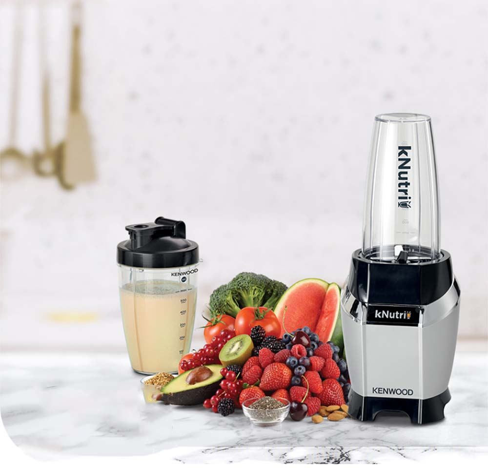
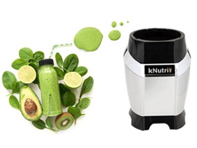
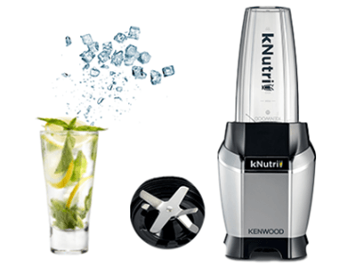
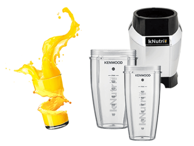
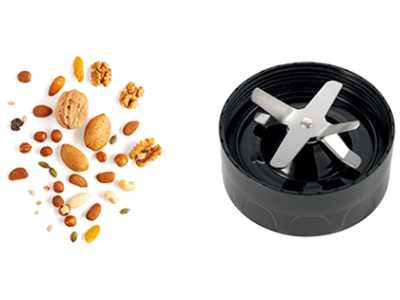
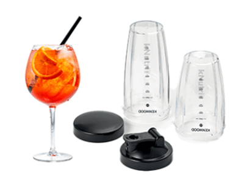

Bırakın İlham Gelsin
BSP70.180SI
Nutri Blender


600 Watt Karıştırma Gücü
Güçlü motoru ve yüksek kaliteli paslanmaz çelik bıçakları ile her çeşit smoothie ve karışımlarınızı daha hızlı hazırlayabilirsiniz.

Buz Kırma Fonksiyonu
Güçlü yapısı ve buz kırma fonksiyonu sayesinde, sert malzemelerinizi ve buzlu içeceklerinizi güvenle hazırlayabilirsiniz

Tritan Gövde
Tritan yapısı sayesinde kötü tat bırakmaz ve kırılmaya, çatlamaya karşı daha dayanıklıdır.

Paslanmaz Çelik Bıçaklar
Dayanıklı paslanmaz çelik bıçak yapısı ile buzları, kuruyemişleri ve sert malzemeleri rahatlıkla parçalayabilirsiniz.

Dayanıklı Al/Götür Şişe
Kapaklı 600 ve 700 ml kapasiteli BPA içermeyen 2 adet şişesi ile enerji ve tazelik daima yanınızda.